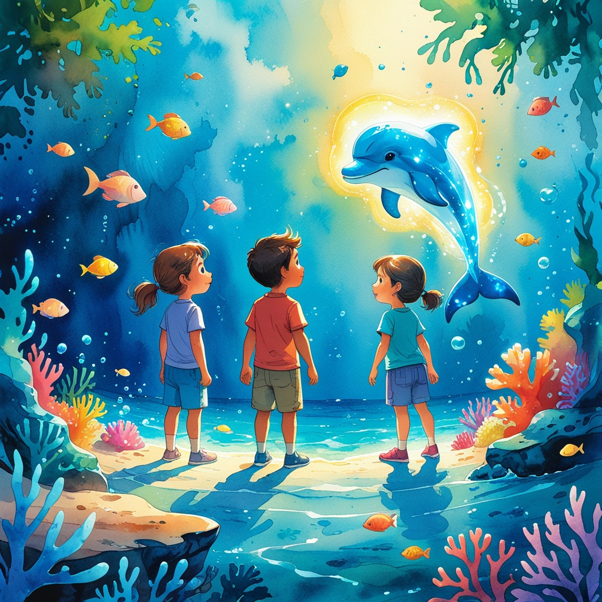
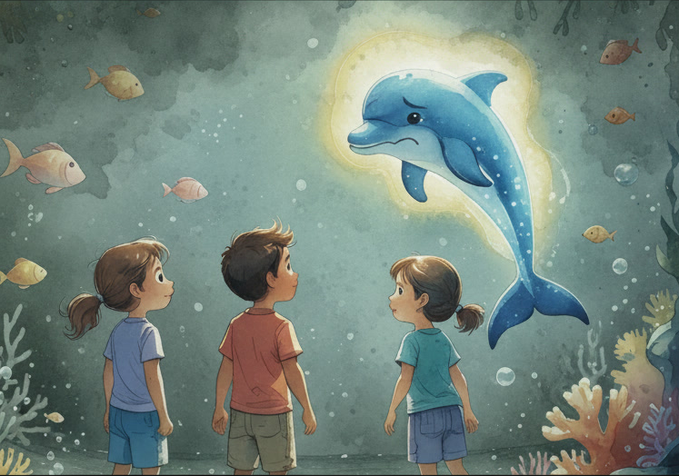
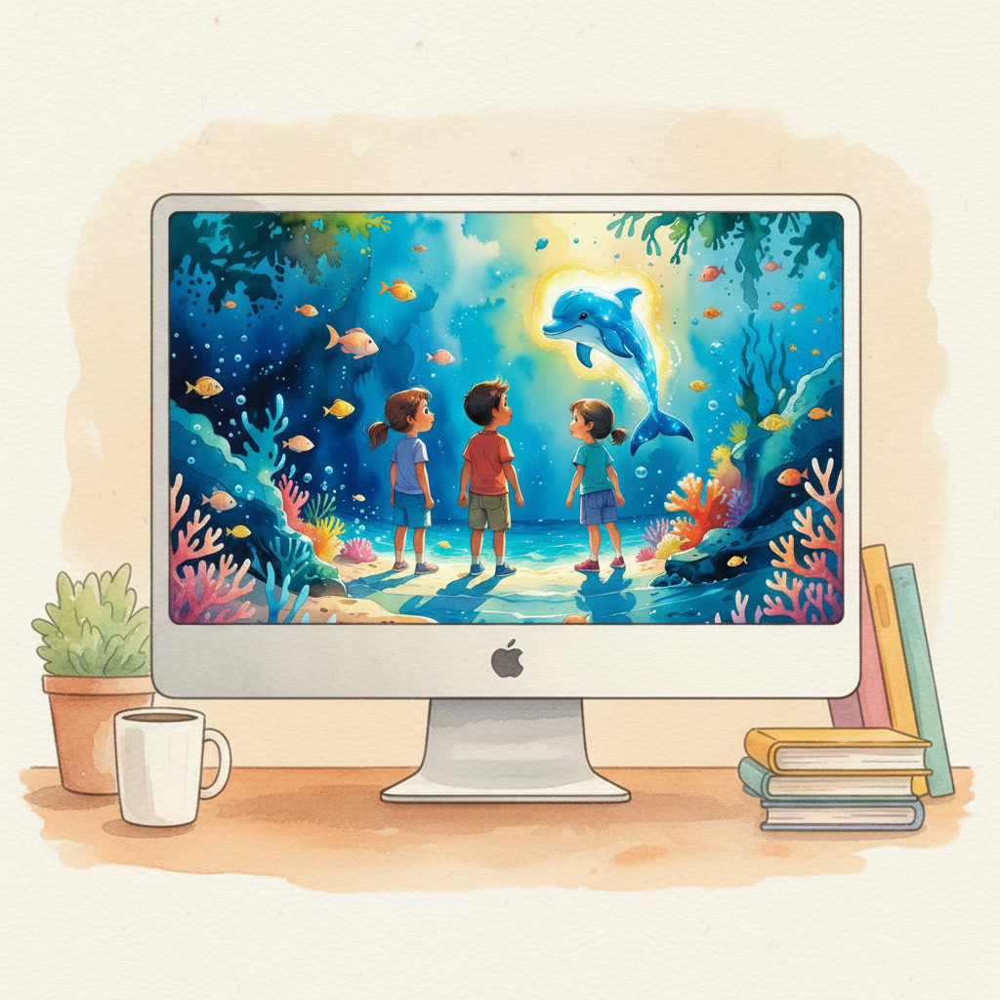

El dia que el professor Bombolla va entrar a classe amb una capsa metàl·lica sota el braç, tothom va saber que passaria alguna cosa especial.
—Avui no obrirem el llibre de ciències —va anunciar amb un somriure misteriós—. Avui salvarem un oceà.
Teo va aixecar el cap de seguida.
Amb un experiment? - va preguntar.
—Amb un videojoc —va respondre el professor Bombolla, ajustant-se les ulleres amb entusiasme.
En pocs minuts, les pantalles de la classe es van il·luminar amb un blau intens. A la pantalla hi apareixia el títol: Missió: salvar l’oceà digital.
Teo, Noa i Lia van formar equip.
Quan el joc va començar, van aparèixer dins d’un oceà espectacular. L’aigua era transparent com el vidre. Els peixos nedaven entre coralls de colors brillants. Tot semblava viu i perfecte.
De sobte, una figura lluminosa va travessar l’aigua: era un dofí blau amb ulls suaus.
—Hola, sóc l’Aqua —va dir amb veu clara—. Cada decisió que prengueu afectarà aquest oceà.
Teo va somriure amb confiança.
—Som-hi! Guanyarem aquesta missió.
Al principi, tot era fàcil. Podien construir ports per guanyar punts ràpidament. També podien augmentar la pesca per aconseguir més recursos.
—Més pesca vol dir més punts! —va exclamar Teo.
Van prémer els botons sense dubtar. Els punts pujaven ràpidament i tots tres reien emocionats.
Però al cap d’una estona, alguna cosa va canviar.
L’aigua ja no era tan clara.
Alguns peixos van desaparèixer.
Els coralls van començar a perdre el seu color viu.
—Què està passant? —va preguntar Lia.
L’Aqua va aparèixer de nou, aquesta vegada amb un to més seriós.
—Heu pescat massa. Heu construït sense pensar en l’equilibri. L’oceà necessita temps per recuperar-se.
Teo va fruncir el front.
—Però només volíem més punts…
Noa va observar el mapa del joc amb atenció.
—Mireu això. Si seguim així, d’aquí a uns minuts no quedarà res per salvar.
Van quedar en silenci. De sobte, el joc ja no semblava tan divertit.
—Podem arreglar-ho? —va preguntar Lia.
—Sempre hi ha temps per canviar —va respondre l’Aqua.


Aquesta vegada van decidir actuar diferent.
Van reduir la pesca.
Van crear zones protegides.
Van invertir punts en energia neta.
Van netejar àrees contaminades.
Al principi els punts pujaven més lentament. Teo es removia inquiet.
—Així trigarem molt…
—Potser no es tracta d’anar ràpid —va dir na Noa.
A poc a poc, l’aigua va començar a aclarir-se. Els peixos van tornar. Els coralls van recuperar els seus colors brillants.
L’oceà respirava de nou.
Quan el temps del joc es va acabar, l’Aqua va aparèixer somrient.
—Heu entès la lliçó més important: cada acció té conseqüències.
Les pantalles es van apagar i la classe va tornar al silenci habitual.
El professor Bombolla els va mirar amb ulls brillants.
—Què heu après, equip d’herois marins?
Teo va pensar uns segons abans de respondre.
—Que voler guanyar ràpid pot fer mal sense que te n’adonis.
—Que les decisions petites també compten —va afegir Lia.
Noa va concloure:
—Que si volem un oceà viu, hem de pensar en el futur, no només en els punts.
El professor Bombolla va fer una petita reverència teatral.
—Exacte! I recordeu… el planeta no té botó de reinici.
Aquell dia, els tres amics van entendre que no era només un videojoc.
Era un mirall del món real.
I fora de la pantalla, també estaven jugant una partida molt important.
Una partida que encara podien guanyar. 🌍